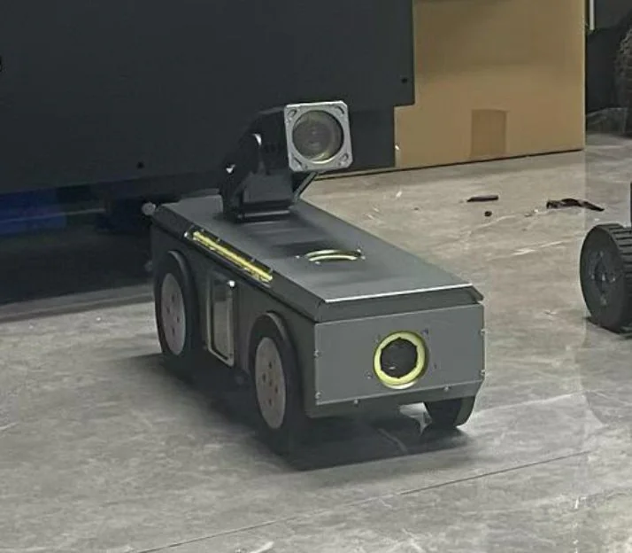

风电叶片检测机器人
围绕叶片表面巡检，联动机器人行走、拍摄视角和补光，记录已拍与待拍区间。
- 个人职责
- 参与设备侧行走与拍摄动作的对接。
- 项目内容
- 四轮驱动、多相机扫描与补光配合

项目整体架构图
分段视觉扫描
巡检操作端选择叶片侧面及叶根至叶尖的扫描区间
分段扫描任务
巡检工控机协调行走速度、视角、相机采集与补光
行走、云台和补光控制
四轮扫描机器人移动并调整云台，采集多相机影像
ROS2 节点通信关系图
本图表示方案中的功能节点和数据流，影像采集通过网络相机链路接入。
扫描控制
分段扫描任务节点按叶片侧面和展向区间编排扫描
区间动作与档位
设备接口模块对接驱动器、云台与调光模块
设备控制量
行走与拍摄设备执行行走、视角调整与补光设置
质检与补拍
多相机采集模块获取重叠视野的多路图像
帧与拍摄位置信息
图像归档与质检模块依据标定信息按区间关联照片
覆盖记录与质量标记
覆盖记录与补拍任务按已拍区间和质量问题安排复拍
软件模块设计
- 展向扫描编排
- 按叶片侧面与展向区间安排扫描速度、拍摄视角和补光档位。
- 本体执行与采图
- 协调四轮行走、云台、五路相机和七路补光。
- 影像归档与关联
- 通过标定信息关联重叠视野，以风机、叶片编号和区间检索照片。
- 表面缺陷与质量筛查
- 标记前缘侵蚀、涂层剥落及失焦、过曝、反光帧，形成补拍清单。
硬件通信接口设计
| 设备或端点 | 通信接口 | 信号或数据 |
|---|---|---|
| 四轮电机驱动器 | Modbus RTU | 行走控制指令 |
| 云台控制器 | Modbus RTU | 拍摄视角调整指令 |
| 五路网络相机与工控机 | 以太网图像采集 | 多相机影像 |
| 七路补光设备 | 多通道工业调光模块 | 补光控制档位 |
关键功能与技术说明
- 通过覆盖记录组织定点复拍
- 对照片按风机、叶片编号和展向区间归档，利用多相机标定关联重叠视野。根据覆盖记录和影像质检结果确定复拍区间、视角与曝光调整项。